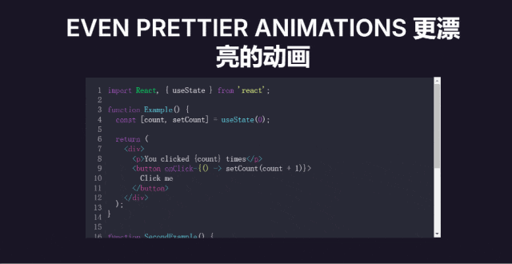

如何实现下面这种效果？
Reveal.js 是一个基于 HTML、CSS 和 JavaScript 的开源演示框架，它允许用户创建具有丰富动画效果和交互性的幻灯片。与传统的 PPT 或 Keynote 不同，Reveal.js 充分利用了 Web 技术的优势，使得演示文稿更加现代、灵活和跨平台。
Reveal.js 具有以下特点：
CSS 和 JavaScript，可以几乎无限制地自定义外观和行为。Markdown 支持：支持 Markdown 语法，便于编写和维护内容。安装
Reveal.js 提供多种安装方式，最基本方法前往 Github 下载源码，无需任何构建工具。如果想在现有项目中使用 Reveal.js 可以通过包管理工具引入。
npm install reveal.js
# or
yarn add reveal.js
简单示例
示例项目中，直接下载 reveal.js 源码放在本地。
<html>
<head>
<link rel="stylesheet" href="./reveal.js/dist/reveal.css" />
<link rel="stylesheet" href="./reveal.js/dist/theme/black.css" />
</head>
<body>
<div class="reveal">
<div class="slides">
<section>Slide 1</section>
<section>Slide 2</section>
<section>
<section>Slide 3.1</section>
<section>Slide 3.2</section>
<section>Slide 3.3</section>
</section>
<section>Slide 4</section>
</div>
</div>
<script src="./reveal.js/dist/reveal.js"></script>
<script>
Reveal.initialize();
</script>
</body>
</html>
演示文稿标记层次结构需要是 .reveal > .slides > section ，其中 section 元素代表一张幻灯片并且可以无限重复。
如果将多个 section 元素放置在另一个 section 内，它们将显示为垂直幻灯片。第一张垂直幻灯片是其他幻灯片的“根”（位于顶部），并将包含在水平序列中。
Reveal.js 可以创建图文并茂、逻辑清晰的报告。Reveal.js 的动画效果和交互性，可以让产品介绍更加生动有趣，吸引观众的注意力。Reveal.js 都能帮助制作出专业且吸引人的演示文稿。Reveal.js 的简洁代码结构、全屏背景支持、灵活的布局和丰富的插件库使其成为一个强大的动态演示文稿制作工具。无论是开发者还是非专业人士，都可以通过学习和实践 Reveal.js 制作出精美的演示文稿。